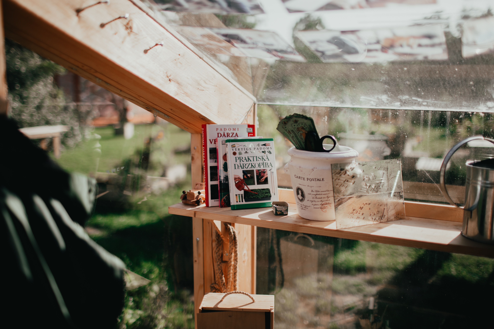

Gallery



temen-temen biasa manggil saya satrio, saya orang yang biasa aja tapi ada satu cita-cita yang selalu ada di fikiran saya hari demi hari saya jalani ambisi ini selalu menemani saya setiap hari, saya sangat ingin membuat perpustakaan, perpustakaan yang punya nuansa literasi yang kuat dimana semua kalangan usia ada disana, terutama pemuda, orang yang hidupnya tidak sia sia adalah meraka yang di waktu muda nya banyak menghabiskan waktu untuk menggalih ilmu pengetahuan, semoga dengan adanya perpustakaan ini bisa membangun pundi-pundi peradaban yang ada di indonesia
©2019 - Kuzan - All Right Reserved